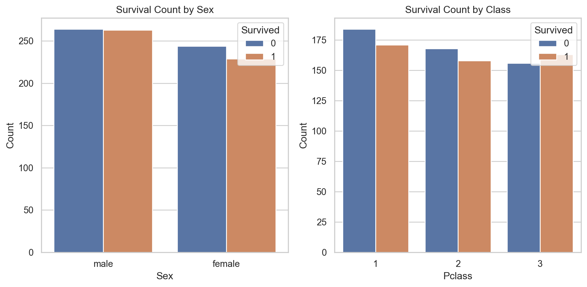

{'Missing Values': PassengerId 0
Pclass 0
Name 0
Sex 0
Age 0
SibSp 0
Parch 0
Ticket 0
Fare 0
Embarked 0
Survived 0
dtype: int64,
'Data Types': PassengerId int64
Pclass int64
Name object
Sex object
Age int64
SibSp int64
Parch int64
Ticket object
Fare float64
Embarked object
Survived int64
dtype: object}
Show/Hide Code
titanic_df.describe(include="all")
PassengerId
Pclass
Name
Sex
Age
SibSp
Parch
Ticket
Fare
Embarked
Survived
count
1000.000000
1000.000000
1000
1000
1000.000000
1000.000000
1000.000000
1000
1000.000000
1000
1000.000000
unique
NaN
NaN
995
2
NaN
NaN
NaN
1000
NaN
3
NaN
top
NaN
NaN
Michael Miller
male
NaN
NaN
NaN
43d75413-a939-4bd1-a516-b0d47d3572cc
NaN
Q
NaN
freq
NaN
NaN
2
527
NaN
NaN
NaN
1
NaN
362
NaN
mean
500.500000
1.964000
NaN
NaN
38.458000
2.032000
2.005000
NaN
247.968650
NaN
0.492000
std
288.819436
0.820596
NaN
NaN
23.103723
1.424431
1.410306
NaN
139.301211
NaN
0.500186
min
1.000000
1.000000
NaN
NaN
1.000000
0.000000
0.000000
NaN
10.020000
NaN
0.000000
25%
250.750000
1.000000
NaN
NaN
19.000000
1.000000
1.000000
NaN
126.295000
NaN
0.000000
50%
500.500000
2.000000
NaN
NaN
36.500000
2.000000
2.000000
NaN
246.500000
NaN
0.000000
75%
750.250000
3.000000
NaN
NaN
59.000000
3.000000
3.000000
NaN
365.662500
NaN
1.000000
max
1000.000000
3.000000
NaN
NaN
79.000000
4.000000
4.000000
NaN
499.780000
NaN
1.000000
Left Plot: Survival Count by Sex
Categories: The plot distinguishes between male and female passengers.
Bars:
Blue bars represent the count of passengers who did not survive (Survived = 0).
Orange bars represent the count of passengers who survived (Survived = 1).
Observations:
The survival rate is relatively balanced between males and females, with a slightly higher count of non-survivors among males compared to females.
However, the difference between survivors and non-survivors is not very large, indicating that sex alone might not be a strong predictor of survival in this dataset.
Right Plot: Survival Count by Class
Categories: The plot shows the three passenger classes: 1st, 2nd, and 3rd.
Bars:
Blue bars represent the count of passengers who did not survive.
Orange bars represent the count of passengers who survived.
Observations:
There is a noticeable trend where 1st class passengers have a higher survival rate than 2nd and 3rd class passengers. The survival rates for 2nd and 3rd classes appear to be lower.
The number of non-survivors is generally higher in the lower classes (2nd and 3rd), which might suggest that class is an important factor in determining survival.
Summary:
Sex: The survival rates between males and females are somewhat balanced, but males have a slightly higher count of non-survivors.
Class: There is a clear trend that shows higher survival rates in 1st class compared to 2nd and 3rd classes, suggesting that being in a higher class might have increased a passenger’s chance of survival.
These observations can be used to inform feature selection or engineering when building a predictive model for survival, as passenger class appears to have a more pronounced effect than sex.
Show/Hide Code
# Set plot stylesns.set(style="whitegrid")# Plotting the count of survivors by sexplt.figure(figsize=(10, 5))# Survival rate by sexplt.subplot(1, 2, 1)sns.countplot(data=titanic_df, x="Sex", hue="Survived")plt.title("Survival Count by Sex")plt.xlabel("Sex")plt.ylabel("Count")# Survival rate by classplt.subplot(1, 2, 2)sns.countplot(data=titanic_df, x="Pclass", hue="Survived")plt.title("Survival Count by Class")plt.xlabel("Pclass")plt.ylabel("Count")plt.tight_layout()plt.show()

Step 2: Machine Learning Model
Preprocessing:
Handle missing values, if any.
Convert categorical variables into numerical ones (e.g., Sex, Embarked).
Feature scaling (if necessary).
Split the data into training and testing sets.
Model Selection:
Try different models like Logistic Regression, Random Forest, and Support Vector Machine (SVM).
Use cross-validation to evaluate model performance.
Check accuracy, precision, recall, and F1-score.
Model Evaluation:
Analyze the confusion matrix.
Evaluate the model on the test set.
Perform feature importance analysis if using tree-based models.
Confusion Matrix
The confusion matrix is:
[[55, 51],
[49, 45]]
True Negatives (TN): 55
The model correctly predicted 55 instances where the actual class was 0 (did not survive).
False Positives (FP): 51
The model incorrectly predicted 51 instances as class 1 (survived) when the actual class was 0.
False Negatives (FN): 49
The model incorrectly predicted 49 instances as class 0 (did not survive) when the actual class was 1.
True Positives (TP): 45
The model correctly predicted 45 instances where the actual class was 1 (survived).
Classification Report
The classification report provides precision, recall, and F1-score for each class (0 and 1):
Class 0 (Did Not Survive):
Precision: 0.53
Of all instances predicted as class 0, 53% were correctly identified (55 out of 106).
Recall: 0.52
Of all actual class 0 instances, the model correctly identified 52% (55 out of 106).
F1-score: 0.52
The harmonic mean of precision and recall, representing the balance between precision and recall.
Class 1 (Survived):
Precision: 0.47
Of all instances predicted as class 1, 47% were correctly identified (45 out of 94).
Recall: 0.48
Of all actual class 1 instances, the model correctly identified 48% (45 out of 94).
F1-score: 0.47
The harmonic mean of precision and recall, representing the balance between precision and recall.
Overall Metrics
Accuracy: 0.50
The model correctly classified 50% of the total instances (100 out of 200).
Macro Avg:
Precision, Recall, F1-score: 0.50 each, indicating the average performance across both classes.
Weighted Avg:
The weighted average precision, recall, and F1-score are also 0.50, taking into account the support (number of actual instances) for each class.
Summary:
The model’s performance is mediocre, with accuracy around 50%, meaning it is only slightly better than random guessing.
The precision and recall values for both classes are close to each other but not high, indicating the model struggles to distinguish between the two classes effectively.
The model’s F1-scores, which balance precision and recall, are also around 0.50 for both classes, reflecting the overall mediocre performance.
This could suggest that the model may need more tuning, better features, or additional data to improve its ability to accurately predict survival.
Show/Hide Code
# Preprocessing# Convert categorical variables into numerical onesle_sex = LabelEncoder()titanic_df['Sex'] = le_sex.fit_transform(titanic_df['Sex'])le_embarked = LabelEncoder()titanic_df['Embarked'] = le_embarked.fit_transform(titanic_df['Embarked'])# Features and target variableX = titanic_df.drop(['PassengerId', 'Name', 'Ticket', 'Survived'], axis=1)y = titanic_df['Survived']# Split the data into training and testing setsX_train, X_test, y_train, y_test = train_test_split(X, y, test_size=0.2, random_state=42)# Train a Random Forest modelrf_model = RandomForestClassifier(random_state=42)rf_model.fit(X_train, y_train)# Predictions and evaluationy_pred = rf_model.predict(X_test)# Generate evaluation metricsconf_matrix = confusion_matrix(y_test, y_pred)class_report = classification_report(y_test, y_pred)conf_matrix
McKinney, Wes. 2010. “Data Structures for Statistical Computing in Python.” In Proceedings of the 9th Python in Science Conference, edited by Stéfan van der Walt and Jarrod Millman, =51–56.
Pedregosa, F., G. Varoquaux, A. Gramfort, V. Michel, B. Thirion, O. Grisel, M. Blondel, et al. 2011. “Scikit-Learn: Machine Learning in Python.”Journal of Machine Learning Research 12: 2825–30. https://doi.org/https://dl.acm.org/doi/10.5555/1953048.2078195.
Van Rossum, Guido, and Fred L. Drake. 2009. Python 3 Reference Manual. Scotts Valley, CA: CreateSpace.